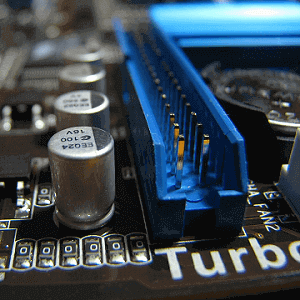

Składamy komputer. Wybieramy płytę główną.
Z cyklu poświęconego samodzielnemu składaniu komputera, omawiamy aspekt doboru płyty głównej. Dziś przeanalizujemy, jaka płyta główna będzie najlepsza.

Aby powrócić kliknij baner.
Jaka płyta główna?
Jaką płytę wybrać? MOBO (skrót z j.ang. „motherboard”) należy dobrać odpowiednio do zestawu. Jeśli mamy ograniczony budżet, który chcemy przeznaczyć na komputer raczej z tych budżetowych, lub posiadamy procesor z zablokowanym mnożnikiem (co znacznie uszczupla możliwości jego overclockingu), to nie ma sensu kupować płyty opartej na chipsecie porównywalnym do Z97 za grube setki złotych. Zdecydowanie lepszym rozwiązaniem będzie oszczędzić na tym elemencie i dołożyć do mocniejszego procesora, karty graficznej, pamięci RAM o większej pojemności, lub też dysku SSD. Analogicznie kiedy kupujemy procesor pokroju Intela i7 4790k za kwotę 1500 złotych, osadzanie go na płycie głównej z chipsetem H81 koszującej 200 złotych to najzwyklejsze marnowanie jego potencjału. Tym bardziej, że bardzo często zestawy tego typu wyposażane są z kilka mocnych kart graficznych.
Również dość istotny w tym przypadku jest BIOS, czyli oprogramowanie umożliwiające sterowanie parametrami całego osprzętu (przykładowo wybór dysku, z którego ma nastąpić rozruch). Droższe płyty głowne posiadają BIOS wyposażony w większą ilość funkcji i większe możliwości kontroli nad sprzętem. Między innymi sterowanie taktowaniem, napięciami procesora oraz monitorowanie jego temperatury. Naturalnym następcą BIOSu zostało UEFI, które poza zdecydowanie większymi możliwościami oferuje również przyjemny interfejs graficzny sterowany myszką, zamiast czarnego bądź niebieskiego interfejsu tekstowego z genezą sięgającą lat osiemdziesiątych.
Co się tyczy producentów, właściwie nie ma złych wyborów – o ile jest to płyta renomowanych i wiodących producentów, do których zaliczają się: MSI, Gigabyte, ASUS i AsRock. Oczywiście każdy z nich posiada w swojej ofercie te mniej i bardziej udane modele, zdarzają się produkty świetne, ale i wręcz przeciwnie – takie, od których należy trzymać się z dala. Polecam przed zakupem poczytać w internecie opinie na temat modelu, którym jesteśmy zainteresowani. Zdecydowanie generalizowanie w tym przypadku nie jest możliwe.
Co się tyczy producentów, właściwie nie ma złych wyborów – o ile jest to płyta renomowanych i wiodących producentów, do których zaliczają się: MSI, Gigabyte, ASUS i AsRock. Oczywiście każdy z nich posiada w swojej ofercie te mniej i bardziej udane modele, zdarzają się produkty świetne, ale i wręcz przeciwnie – takie, od których należy trzymać się z dala. Polecam przed zakupem poczytać w internecie opinie na temat modelu, którym jesteśmy zainteresowani. Zdecydowanie generalizowanie w tym przypadku nie jest możliwe.
Najpopularniejsze rozmiary płyt głownych
ATX – pełnoprawna płyta główna, jest to najpopularniejszy standard. W tym formacie zazwyczaj produkowane są płyty głowne ze średniej i wysokiej półki cenowej, aby zmieścić na niej odpowiednią ilość złącz. Posiada wymiary 305 × 244mm
Micro-ATX – płyty główne w tym formacie są zazwyczaj produktami z serii budżetowych. Budową przypomina ATX, lecz jej dolna część została przycięta. Wymiary: 244 × 244mm
Oba powyższe formaty są najpopularniejsze na dzień dzisiejszy i oba są kompatybilne z większością obudów typu desktop dostępnych na rynku.
Micro-ATX – płyty główne w tym formacie są zazwyczaj produktami z serii budżetowych. Budową przypomina ATX, lecz jej dolna część została przycięta. Wymiary: 244 × 244mm
Oba powyższe formaty są najpopularniejsze na dzień dzisiejszy i oba są kompatybilne z większością obudów typu desktop dostępnych na rynku.
Warto zaznaczyć, że konstrukcja rdzenia AMD jest zgoła inna od konstrukcji rdzenia Intela. Toteż procesory Intela mają na ogół większą wydajność pojedynczego rdzenia od produktów marki konkurencyjnej.
2.Płyta główna
